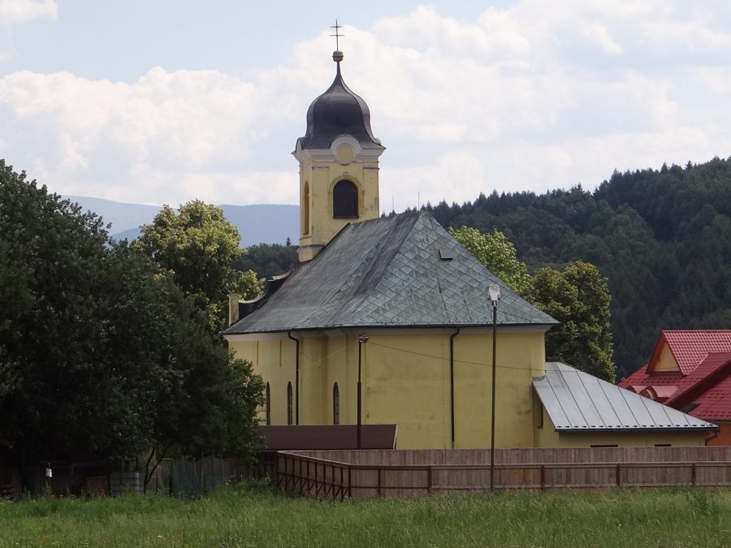
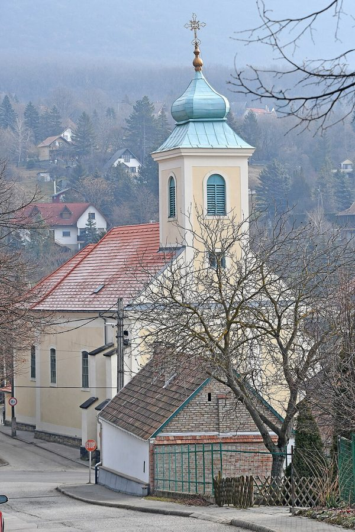
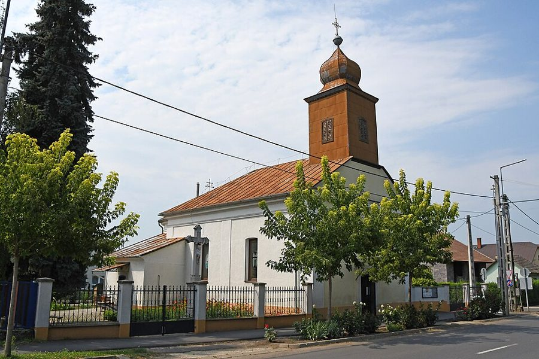

László Bán (1934–2021) trouwde met een dochter van András Kagol en Mária Fridlik. Hun voorouders
kwamen uit vier heel verschillende hoeken: een dorp in Polen, een bergdorp in Slowakije, een Slowaaks dorp vlak bij
Boedapest en de vlakte van Noordoost-Hongarije. Rond 1900 kwamen ze allemaal in Boedapest terecht.
Szczepanów, bij de parochiekerk. Foto: Aleksandra Furtak, Wikimedia Commons, CC BY-SA 3.0 PL.
János Lőrinc Kargol werd op 6 juni 1867 geboren op huis nummer 57 in Wokowice, een dorpje naast
Szczepanów, bij Brzesko in Galicië. Dat was toen het Poolse deel van Oostenrijk-Hongarije; nu ligt het in
Zuid-Polen. Szczepanów is bekend als geboorteplaats van de heilige Stanislaus. Een dag later werd János in de kerk
van Szczepanów gedoopt als Joannes Laurentius.
In Wokowice wemelde het van de Kargols: de naam komt in de kerkboeken honderden keren voor, en in 1654 trouwde er
al een Stanislaus Kargol in Szczepanów. De familie van János
woonde al minstens sinds 1806 op huis nr. 57. Zijn betovergrootvader Casimir Kargol is de oudste die we kennen.
Diens zoon Simon (1777–1834) trouwde in 1806 met Catharina Lis. Simons zoon Wojciech trouwde op zijn
negentiende en stierf al op zijn dertigste, in 1845. Vier jaar later stierven twee van Wojciechs kinderen kort na
elkaar, in het jaar van de grote cholera-epidemie.
Het leven op nr. 57 was hard. De vader van János, Ferenc (Franciscus) Kargol (1836–1903), trouwde drie keer.
Zijn eerste vrouw stierf in 1860; hun twee baby's waren toen al gestorven. Zijn tweede vrouw, Marianna Latocha, de moeder van
János, stierf in april 1872, toen János vier was. Van haar vier kinderen werden er twee maar een paar maanden oud.
Tien weken later trouwde Ferenc opnieuw, met Salomea Żurek. Ook van haar kinderen stierven de meesten jong.
Marianna was een buurmeisje: ze kwam van huis nr. 40 in Wokowice, waar de familie Latocha woonde. Haar moeder
was op haar vijftiende getrouwd; haar grootvader Martinus Latocha stierf in hetzelfde cholerajaar 1849 als de twee
Kargol-kinderen. De families zaten nauw in elkaar: ook een zus en een broer van Marianna trouwden met een Kargol.
Waarom János vertrok, weten we niet. Veel jonge mannen uit het arme Galicië zochten toen werk elders. Als jonge
man trok János naar Boedapest, dat toen razendsnel groeide. Hij werkte er als kőműves napszámos:
een dagloner die metselaars hielp. Hongaar werd hij nooit. In 1899 staat hij nog ingeschreven als Oostenrijks
onderdaan, met woonrecht in zijn geboortedorp. Zelfs op de geboorteakte van zijn zoon Miklós uit 1908 staat nog dat
het kind "net als zijn vader Oostenrijks onderdaan uit Galicië" is.
Op 4 augustus 1895 trouwde hij in Boedapest met Zsuzsanna Savrnoch. Ze kregen acht kinderen. Het gezin
verhuisde vaak: van het 8e en 7e district naar Újpest, en rond 1908 naar Kispest. Dat was toen nog een aparte
gemeente net buiten de stad. Een zoon
noemden ze Szaniszló, de Hongaarse naam van Stanislaus, de heilige van het dorp van zijn vader. Drie kinderen
stierven jong.
Rijk was het gezin niet. In 1911 zat Zsuzsanna vier maanden in de gevangenis, omdat ze had geholpen bij een
diefstal. Het gevangenisregister geeft een zeldzaam beeld van haar: een kleine, stevige vrouw van 1,50 meter, met een
rond gezicht, lichtbruin haar en blauwe ogen. Ze sprak Slowaaks, Hongaars en Duits, maar kon niet lezen of schrijven,
en de proceskosten waren "niet te verhalen": er was niets te halen. Thuis in Kispest wachtten zes kinderen.
János stierf op 25 augustus 1936 in Kőbánya, het 10e district. Op zijn overlijdensakte staan nog de namen van zijn
ouders uit Wokowice: Ferenc Kargol en Mária Latocha.
András werd op 7 maart 1901 geboren in de binnenstad. Op 5 januari 1926 trouwde hij in het 5e district
met Mária Fridlik. Hun dochter trouwde later met László Bán.
Met of zonder r? In de akten staat de naam op allerlei manieren: Kargol, Kargul, Kagol en
Kágol, soms voor dezelfde persoon. In Polen is het Kargol. De Hongaarse ambtenaren schreven op wat ze hoorden,
en in de tak van András bleef Kagol hangen.
De Savrnochs: uit Lúčky in Liptov

Lúčky (Liptov, Slowakije). Foto: Jerzy Opioła, Wikimedia Commons, CC BY-SA 3.0.
De moeder van András, Zsuzsanna Savrnoch, werd op 30 september 1875 geboren in Lúčky, een dorp
in de bergstreek Liptov. Nu ligt het in Slowakije, bij Ružomberok; toen hoorde het bij Hongarije. Haar ouders
waren Mihály Savrnoch en Mária Chovan.
Tussen 1880 en 1883 vertrok het hele gezin naar Boedapest, net als duizenden andere Slowaken die in de hoofdstad
werk zochten. Hun dochter Mária werd in december 1883 al in Boedapest gedoopt. Mihály stierf in 1897 in het 8e
district. Mária Chovan werd 74 en stierf in 1924 in Pesterzsébet.
De Fridliks: uit het Pilisgebergte

De katholieke kerk van Pilisszántó. Foto: Pasztilla (Attila Terbócs), Wikimedia Commons, CC BY-SA 4.0.
Mária Fridlik, de vrouw van András, werd op 4 september 1894 geboren in Pilisszántó. Dat is een
dorp in de heuvels ten noordwesten van Boedapest, waar in de 18e eeuw Slowaakse boeren waren komen wonen. Haar
ouders heetten István Fridlik en Erzsébet Kunyik.
Vlakbij ligt Tinnye, het dorp dat in de familie werd onthouden. Daar woonde de familie Kunyik al vóór
1850, en in 1850 trouwde er een Terézia Fridlik. Of Mária's ouders zelf uit Tinnye kwamen, moet nog uitgezocht
worden in de kerkboeken van beide dorpen.
Mária trouwde pas op haar 31e, in 1926, met András Kagol. Ze overleed op 21 mei 1961.
De Báns en Borbélys: uit Szabolcs

Nagyhalász, waar István Bán en Borbála Zele in 1896 trouwden. Foto: Pasztilla (Attila Terbócs), Wikimedia Commons, CC BY-SA 4.0.
De familie van László Bán komt uit de andere kant van het land: het comitaat Szabolcs in het noordoosten,
een vlakte met landbouwdorpen langs de Tisza. Zijn grootvader István Bán trouwde op 9 januari 1896 in
Nagyhalász met Borbála Zele. Het gezin trok van dorp naar dorp: hun kinderen werden geboren of stierven in
Nyírbogdány, Dombrád, Nagyhalász en Ibrány. Twee kinderen stierven heel jong.
László's vader József Bán werd op 7 januari 1904 geboren in Ibrány. Op 19 maart 1927 trouwde hij met
Margit Borbély, dochter van Sándor Borbély en Karolina Csernai uit Vasmegyer en Nyírbogdány, een paar kilometer
verderop. Hun zoon László werd in 1934 geboren; waar precies, is nog niet gevonden. Later woonde de familie in
Boedapest, waar József in februari 1958 overleed.
In het kort
1806Simon Kargol trouwt met Catharina Lis; de familie woont op huis nr. 57 in Wokowice
1836Ferenc Kargol geboren in Wokowice
1860Ferenc Kargol trouwt met Marianna Latocha
1867János Kargol geboren in Wokowice (parochie Szczepanów, Galicië)
1872Moeder Marianna Latocha overlijdt
1875Zsuzsanna Savrnoch geboren in Lúčky (Liptov)
1880–83Gezin Savrnoch verhuist naar Boedapest
1894Mária Fridlik geboren in Pilisszántó
1895János Kargol trouwt met Zsuzsanna Savrnoch in Boedapest
1896István Bán trouwt met Borbála Zele in Nagyhalász
1901András Kagol geboren in Boedapest
1904József Bán geboren in Ibrány
1911Zsuzsanna Savrnoch vier maanden in de gevangenis
1926András Kagol trouwt met Mária Fridlik
1936János Kargol overlijdt in Boedapest (Kőbánya)
1927József Bán trouwt met Margit Borbély
1934László Bán geboren
2021László Bán overleden
Bekijk de stamboom voor alle personen en hun gegevens, of de kaart
om te zien waar iedereen vandaan kwam. Onder Bronnen staat wat nog uitgezocht moet worden.